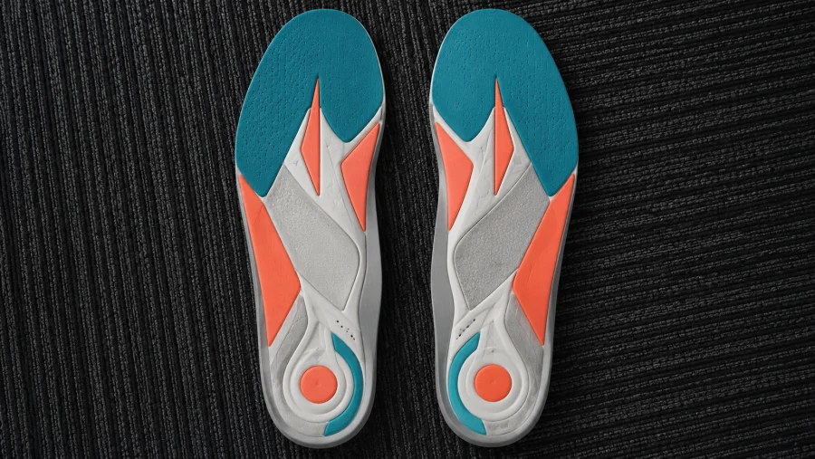
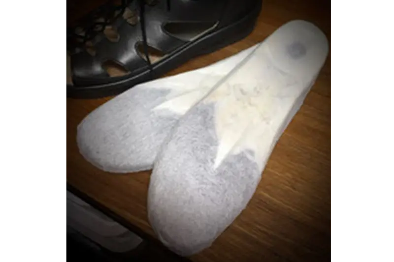

ディモコ（DYMOCO）は、「DYNAMIC MOVE CONTROL」の略です。NPOオーソティックスソサエティーが定義した考え方で、歩く動きの中で起きているバランスの崩れを見つけ、良い動きへ整えていくインソールの作り方です。決まった一つの完成品があるわけではなく、一人ひとりの歩く動きに合わせてパッドの位置や高さを組み合わせて作る、オーダーメイドのインソールとお考えください。座った状態や立った状態だけでなく、実際に歩く中で確かめて仕上げるのが特徴です。全国のフットケアトレーナーが、この考え方をもとにインソールを作製しています。

足は、踵・親指の付け根・小指の付け根の3点で体重を支えることでアーチが働き、地面からの衝撃を吸収して膝や腰への負担を減らします。この3点のどこかに体重が偏ったり、姿勢が崩れたりすると、身体はバランスを保とうとして首・肩・背中の筋肉に余分な力が入り、疲れやすさや痛みにつながることがあります。作製前に、歩く中で次のようなことが起きていないかを確認します。
- 踵が内側・外側に傾いていないか
- 足が内側へ倒れ込みすぎていないか
- 左右どちらかに体重が偏っていないか
- 足の指をうまく使えているか、蹴り出しが弱くなっていないか
- ウオノメ・タコの部分に圧力が集中していないか
- 足と靴の間に、余分な隙間ができていないか
その結果に合わせて、踵、内側縦アーチ・外側縦アーチ・横アーチ、前足部などへパッドを組み合わせます。同じサイズの足でも、歩く中で起きていることは一人ひとり違うため、パッドの配置は方によって異なります。
「とりあえずディモコ」ではなく、まずお困りのことを伺います。長く歩くと疲れる、姿勢やバランスが気になる、スポーツでの動きを良くしたい、仕事で一日中立ち歩く――きっかけは方によってさまざまです。そのうえで、足の計測、フットプリント、いつもの靴、そして実際に歩く姿を確認しながら、ディモコの考え方でバランスを整えていきます。作った後も使いっぱなしにせず、履いて分かった感覚を伺いながら見直していきます。
- 長く歩くと足・膝・股関節・腰に負担を感じる
- ウオノメ・タコができやすい部分がある
- 外反母趾があり、歩くと痛みや歩きにくさを感じる
- 歩く姿勢や左右のバランスを整えたい
- スポーツでの身体の動きを良くしたい
- 靴の中で足がずれる、踵が浮く感じがある
効果や疲れにくさを保証するものではありません。足の状態や使用する靴によって、合う・合わないがあります。
作り方の基本は、他のインソールと同じ4つのステップです。聞き取り、データ採取、作製・試着、再調整。ディモコでは、この中でも実際に歩く動きの確認を特に大切にしています。詳しい流れはインソール作製の流れをご覧ください。

ディモコ・インソールは、外反母趾など骨の変形そのものを元に戻すものではありません。装具によって痛みが和らぐ可能性はありますが、変形の進行を止められると保証するものではなく、「歩き方を正常化する」「根本的に治療する」ものでもありません。足や膝、腰への負担軽減、歩行時のバランス調整を目指すご案内として、ご理解のうえでご検討ください。
ディモコ・インソールは16,500円（税込）からご案内しています。ウォーキング、スポーツ、街歩き、ビジネス靴など、使用する靴や目的により内容が異なるため、料金一覧とご予約時のご案内をご確認ください。
ANDANTINOは靴の専門店です。医師の診断・処方が必要な場合は、医療機関へご相談ください。
いつもの靴をお持ちください。
お困りごとを伺い、履いて歩くところまで一緒に確かめます。